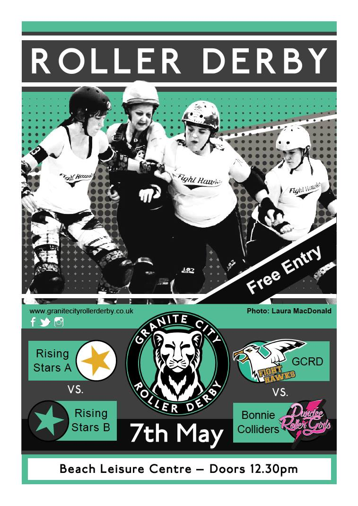
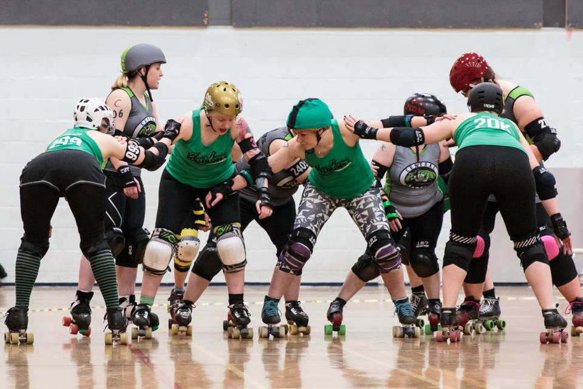
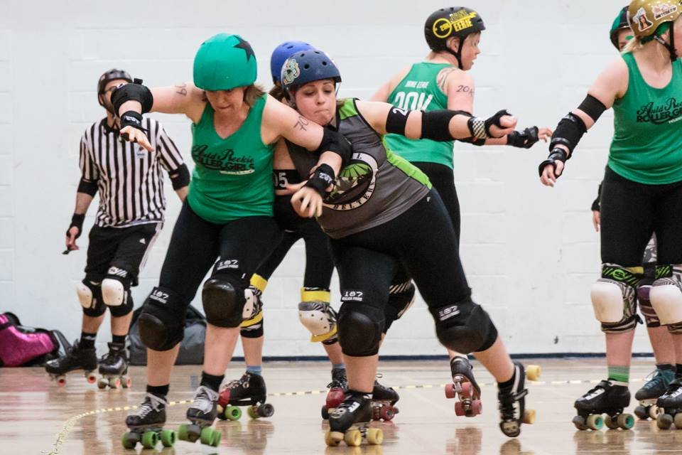
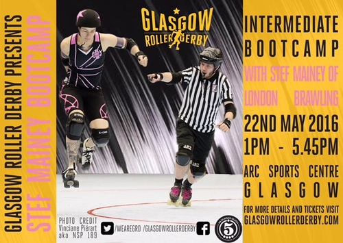

British Champs at Dundee!
As we mentioned last month, with Fierce Valley Roller Girls's hosted double header, the British Championships Tier 3 North was due a couple of fixtures in Scotland.
This Saturday, 21 May sees the second of those, as Dundee Roller Girls host a double-header at their usual venue, the Dundee International Sports Centre.

First up at 1pm will be previous hosts Fierce Valley, taking on Sheffield's Hallam Hellcats Roller Derby. As they currently reside at the bottom of the table for T3 North, this is an important bout for FVRG in order to avoid relegation at the end of the season. FlatTrackStats predicts a close-ish win for the Hellcats, however, with a 7:6 score ratio; that's close enough that an upset is still pretty possible.
Following up, starting at 3pm, the hosts will take on Hull's Angels Roller Dames. Dundee currently top the ranking table, but H.A.R.D are joint second behind them on win/loss ratio, so they'll be keen to take a win to contest for the top spot. FlatTrackStats predicts a strong win for the home team with 29:49 score ratio looking fairly comfortable for their chances of keeping the top spot in the Division, for now.
Tickets are still available online for £5 at BrownPaperTickets, or for £6 on the door. As always, merch and cake stalls will be in abundance.
An Interview With... outgoing Team England Coach, Ballistic Whistle!
A lot of people were surprised to hear that Team England Roller Derby's Ballistic Whistle announce that he did not intend to reapply for the role in the current round of recruitment. (The applications for the Team England (Women's) coaching and management roles are currently being voted on.) Considering his contributions to Roller Derby, both in the National teams, and also ongoing with London Rollergirls and Southern Discomfort, we thought it was a good idea to catch up with him and talk about, well, him. (This interview is also undertaken in collaboration with the UK Roller Derby Association, as part of our National Teams series.)
 Ballistic Whistle (London Rollergirls v Rat City) (Photo: Steve Messerer)
Ballistic Whistle (London Rollergirls v Rat City) (Photo: Steve Messerer)
Despite the wide range of your involvement in Roller Derby, you're probably best known as the Coach and Bench Manager of London Roller Girls, who pretty much were the vanguard of Europe's entry into the top levels of Roller Derby. Did you feel responsible, in a way, for representing the UK or Europe in the early days of LRG going across to the States (and is it more of a relief that other teams are now increasingly high level)? I don't feel that was ever a specific goal or aim of ours. From a really early stage we had aspirations of travelling to the States to play high level derby. That benchmark over the years has continued to be pushed on and on to test how far we can go. Through our first tour of the States, and the first visit of American teams to our shores it was quite evident just how much support we were receiving from the UK and Europe. Feeling that during our Stateside trips has always been amazing for us and serves as quite an emotional motivator when away from home. If we have had an impact on how enthusiastic other players and teams are for playing the sport then we've definitely achieved one of our aims.
Literally everyone we've spoken to before this interview has mentioned specifically that you're a nice guy (and you parodied this in your appearance in the LRG Fort Wayne's World promo videos [which sadly seem to have mostly disappeared from the internet]). Do you think this surprises people? Haha, that's nice of you to say. I guess I try my best not to irk people on purpose, but I definitely have my foibles and personality clashes just like anyone else. I guess what I find most interesting is how people will formulate an idea of you without ever having met you, purely by how they would expect a person in my position to be. I'll often meet someone for the first time and there will be a period of trying to balance out the shockwaves in our interactions as a result of how they expect me to behave. I'd really love to not have to do that.
As well as coaching and bench managing, you also find the time to play on track, with Southern Discomfort (as well as another signing we'll get to next…). How does your time on track contribute to your coaching decisions (and which would you rather be known as: a great coach, or a great skater)? I took some time off during the 2015 season to try and rehabilitate a back injury. It was during this season that there was a major swing towards formation defense. I realised after a number of months that I was lacking empathy for the difficulty our players had working against this formation. Some of the minor adjustments I was asking our players to make, were actually majorly difficult. Getting back into playing has helped me incredibly to understand what is possible and where the difficulties lie in the modern game. I also get the opportunity to jump in with Brawling from time to time, which I find incredibly helpful to understand what it feels like being inside of the on track action.
I roll all of these experiences into my coaching; I guess that answers your parenthesised question. I have no doubt that I love coaching more than playing. I feel like seeing my friends achieve amazing things is much more rewarding for me than achieving them myself. The great thing about fighting to see your team-mates reach their goals, is that you generally achieve yours as a result!
And you recently made the roster for the Team Australia (Wizards of Aus) who will be competing at the Men's Roller Derby World Cup in Calgary. How did you make the decision to represent your birth nation in the World Cup, and how does it feel to be on the team? Um, actually, it's not my birth nation. I was born in Denmark to a Danish father and Belgian mother. I arrived in Australia on my 2nd birthday and remained there until age 25. But, if you were to ask me what I considered my nationality it would be Australia.
At the first World Cup, I had the amazing opportunity to participate with so many of my great derby friends for Team England. Being a part of that team was a fantastic experience, but it wasn't until I was selected for the Australia team that I truly understood what the other players on that English team felt during that first World Cup. In hindsight, I felt incredibly guilty for taking that feeling from someone during the first World Cup, and I feel that is the special thing about that event. Playing for your nation is something that can call on something deeper. At all World Cups I have attended, both male and female, hearing the Australian national anthem has been a...tricky...moment for me emotionally. At this next World Cup, I am going to be so happy to be able to belt out the anthem without any mixed feelings.
You've been Team England Coach for two World Cups, and London Roller Girls coach for 5 years. While both positions are top-level coaching positions, are there more differences than might be apparent? Absolutely. There's no substitute for working with the same team week in week out. You can definitely deliver the most effective change in strategy and refine what you do on track on multiple occasions over a shorter period of time. With both teams you are dealing with a group of incredibly talented skaters, but with Team England it was much more of a situation of building cohesion. Nailing down defaults and making sure, as much as possible, everyone is on the same page.
With the England team, there was the tricky balance of trying not to be just Brawling + friends, but really appreciate that there are different ways to play. World Cups comprise a number of nations from the extreme fledgling derby countries to the most seasoned. We had always set our sights on taking on the most seasoned. Hopefully in coming World Cup cycles, there will be more English players in other teams who have more of that high-level derby play and will be ready to take on the best countries in the world. With limited training sessions, it becomes a lot more sink or swim when put into that intensely hot cauldron of competition, and so it is all about looking for the players who can take that pressure and really excel. Without the experience of that level, it comes so much more down to personality.
Recently, you announced that you would not be applying for the role of Team England Head Coach this time around. Can we talk a bit about your reasons for this, and your feelings about the decision? The 2015 season was one that definitely took a toll on me. Brawling, at the beginning of the season, had set ourselves what we thought was the ultimate goal (incidentally, we have since understood that the Hydra is not the ultimate goal). Having an amazing season and falling short at the critical time definitely hit me with my first proper feeling of derby burnout in the 9 1/2 years I've been in the sport.
This year we've set our sights even higher than the goals we set last year and I understand what that is going to take from me on a personal level. I also feel that this time around, we are blessed with a number of candidates that could really use this as a springboard to get that experience of that new level. I obviously have mixed feelings about it. Watching England at the World Cup is going to be tough as I'll be wanting the best for all my friends on that team, but will have zero input on helping them achieve that. I'll be waving the 3 Lions flag regardless.
And, what have been the high and low points in your 6 years as TE Head Coach? Again, it's only 5 years really as the lead up to that first World Cup happened in the same year.
The lows have always been any time we needed to make some kind of cut to the squad, whether that be to the charter that would go to an event or the roster of 14 that would play. I've been tasked with making these decisions countless times during my life as a coach, but it never gets easy telling talented players that they aren't going to have the opportunity, this time, to do what they love.
As bad as those moments are, they are eclipsed by the highs, and I feel like one of the biggest highs was our final against the USA at the 2014 World Cup. Prior to the game I had pored over and re-written my pre-game speech so many times I thought I had written the perfect speech. I got in there and saw all of those players looking at me to hear the message I had for them at that point. Prior to a game where getting all of the 1 percenters right mattered. I threw everything I had written out the window and just spoke from the heart. Anyone in that room will be able to tell you that the message was pretty simple. Regardless of its simplicity, I feel like it resonated with the players, and really struck a chord. In spite of the result, it was one of those games where we just felt like we were playing on point, executing our strategies so well. It all felt so streamlined and precise, against potentially the toughest group of individual skaters you could ever face on track. For it to culminate in one of my derby idols - Kamikaze Kitten - taking us over the 100 point mark in the final jam, I couldn't have asked for a better written story. For me, that game illustrated what Roller Derby (and playing team sport for that matter) is truly all about.
Given your experience in the role, do you have any advice to pass on to your successor as Head Coach? I feel like there are a lot of coaches out there who work with a top down decision making structure. The coach will dictate the direction and decisions the team makes, sometimes opening the floor to the players for input. When working with some of the best players to ever play the sport, it would be remiss of any coach not to leverage that knowledge and experience. Every single player that played for Team England has a wealth of experience, has an incredibly active derby brain. It's so important to keep those brains ticking over and thinking at a high level, rather than trying to stifle them.
Working with both Brawling and England has shown me that when you are dealing with these incredibly talented groups of players, you are just one equally important part of the team, rather than the single decision making point. Having said that, there definitely comes a point whereby the players need to focus on playing and the decisions need to be directed. The closer to game time this is, the more important it becomes for the coach to take responsibility for decision making. So, rather than a top down, triangle type shape, I think of it more of an hourglass decision making shape. The active brains in the team will feed their ideas into the team's leadership or management, and the leadership with all of this great information will compile it and disseminate a directed decision to the team to execute.
Lastly, coaching a high level national team at a World Cup is something that not many people the world over will ever be able to say they did with their life. It's exhilarating, and the more you put into it, the greater the reward will be. Don't fuck it up!
Rising Stars and Bs at Aberdeen!
Granite City Roller Derby's Northern Fights have been a little distracted by British Champs in the first half of this year, leaving GCRD B, the Fight Hawks to play their home games.

This weekend sees the trend for Scottish Double Headers with Rising Stars bouts continue as Aberdeen's Beach Leisure Centre hosts the Fight Hawks taking on Dundee's B team, the Bonnie Colliders, introduced by two teams of newer skaters from around the country demonstrating their talent (and getting experience to boot).
With doors opening at 12:30pm, May 7th, this is an ideal opportunity to see these skaters, many of whom are from the several new Scottish leagues which are still working towards their first bouts, on track.
The second bout is an unpredictable* match up between Scotland's newer B teams, which should be an unmissable event. Both the Bonnie Colliders and the Fight Hawks have been working hard to develop themselves over the past year, and, while the Fight Hawks are probably the underdogs, the home team advantage could well give them the edge!
If that isn't enough incentive, the refreshment stall will be raising money for Christopher's CLAN Challenge, a 12 month fundraising effort to raise £20k for teenagers and their families affected by cancer in the NE of Scotland.
As always with GCRD's home games, entry is completely free!
*literally, FlatTrackStats can't compare the teams, and has incomplete entries for GCRD B!
Auld Reekie Roller Girls WarriARRGs take on Dundee's Bonnie Colliders
It's a battle royale as new Auld Reekie Roller Girls team the WarriARRGs take on Dundee's Bonnie Colliders this Sunday May 8.

Photograph courtesy of Laura MacDonald
The two east-coast teams will lock horns in an explosive game of roller derby, as the WarriARRGs showcase the latest line-up of what will be an ever-evolving squad.
On the decision for ARRG to add a permanent ad-hoc team, WarriARRGs captain Cirque du Slay said:
“We are a large and dynamic league and it is important for us to provide opportunities for all of our members to play games against outside teams, in front of an audience, to feel part of a team and to work with new people.
“WarriARRGs will allow different groups of skaters to develop in a huge variety of ways which will help our league as a whole to get bigger and better all the time.”

Photograph courtesy of Laura MacDonald
Cirque said her main focus for the team was to get a sense of team bonding and thrill the audience.
She said: “I'd like for us to learn to work together and try out our skills against an external team who train together and use tactics we're not used to.
“I'd also like for us to go on track trusting our teammates and knowing they trust us and to have fun.
“I'd like the audience to cheer themselves hoarse watching some cracking roller derby played by two teams of skaters who are on their way up.”
The game is open to league members and their families and friends, who will gather at Jack Kane Sports Centre on Sunday May 8 to watch the WarriARRGs skaters fight their derby debut.
Glasgow to pack May with events!
With Glasgow Roller Derby's Irn Bruisers taking a short break after completing their fixtures for British Champs, that doesn't mean that the league are slowing down in other areas. In fact, this May looks like being busier than the previous months in terms of events!
Firstly, May 7th sees the return of GRD's popular Queerosity night from earlier in the year, this time with a 90s Grunge feel. The night will run from 7:30pm to midnight, at Garnethill Multicultural Centre, and tickets are available for just £2 online (£3 on the door)!
Then, on May 21, GRD B, the Maiden Grrders, will be taking on Blackpool Roller Derby. Blackpool have had quite a Scottish theme for their year already, having sent a team to the Fierce Valley hosted sur5al and, of course, been both hosted and competed against by Aberdeen's Granite City Roller Derby in Tier 4 of British Champs. This bout sees the Blackpool Roller Coasters play their toughest opponents yet; the Maiden Grrders are higher ranked than any of the teams in Tier 4 North! The bout will be held in Glasgow's traditional venue, the ARC Sports Centre at Glasgow Caledonian University, starting at midday. Tickets will be the usual £6 online, or a little more on the door. 
However, the jewel of the May schedule comes the day after, as London Brawling's Stefanie Mainey will be holding a Co-ed Bootcamp, hosted by GRD on May 22nd. To take advantage of her considerable experience as both a coach and skater in one of the top 4 roller derby teams in the World, this will be an Intermediate Skills bootcamp. Tickets for offskates observers are also available, at a reduced rate (£25 versus £50 for onskates). Hosted at the ARC, the bootcamp will fill the afternoon from 1pm to 5.45.
An interview with UKRDA Chair Tess Robinson
With the National Squads selection processes well underway, under the Observation of the UK Roller Derby Association, we thought it was a good time to catch up with the organisation's Chair, Tess Robinson, to find out more about what they do.
 Tess herself. (Photo: Graeme Willetts)
Tess herself. (Photo: Graeme Willetts)
I guess we should start by talking a bit about who you are, and what you do with UKRDA.
So, I'm Tess Robinson, and I skate with the London Roller Girls B, the Brawl Saints, and I am currently the Chair of the UKRDA Board of Directors, and also the Director of Internal Affairs.
Each of the Directors has a remit in terms of overseeing different committees, so I directly oversee Membership and Grievances, but really all of the directors are such a big team that we're always communicating and collaborating with each other about everything that comes to us.
So, it's not so strict in terms of what people oversee, we just work together to make sure everything runs smoothly.
After that easy intro question, I'd like to lead with something a bit more philosophically difficult: what is the purpose of UKRDA?
So, our mission statement is: "Promoting and Developing the Growth of the Sport in the UK". So, it would be very specific to the UK: we could just say "Growing and Developing the Sport", but it's specific to what we want to achieve in the country. And I think that's very special - because we have such great teams, and because the UK has something different to everyone else (I think that's true of every nation [that they have unique aspects], but I like what we have here). We've got specific kind of projects that we're working on now, but really, I just want to, this is a really difficult question…
The main thing that I would want people to see the UKRDA as is Themselves! After the AGM this year, I started trying to tout this hashtag, #YouKRDA , because I feel that a lot of people think that the UKRDA is a certain person, or a certain group of people. Maybe they think that the UKRDA is the Board of Directors, that we should be Doing Something (and we do, we do do lots of stuff), but people need to understand, and if I'm honest, take responsibility for, the fact that every single person whose team is a UKRDA member is a member of the UKRDA, and they have the power to do whatever they want with it.
A lot of people ask us, "What is the UKRDA, what does the UKRDA do; what is the UKRDA doing, why isn't it doing This?", and the simple answer is: because the community isn't doing it. We [the Directors] wholeheartedly listen to the members, and we just need our members to know that they have the power as individuals, to instigate any changes that they want to see.
So, for you, the democratic and communal nature of Roller Derby is key to how UKRDA works?
Definitely! UKRDA is a league of leagues. (Or, I think a lot of people are trying to move away from "league" as a word: UKRDA is a Team of Teams.) So, we're just one big Community. We oversee and ensure that everything is running as it should, and as we want it, as a community.
One of the things that I think is key to this Role for UKRDA is your relationships with the other bodies that affect Roller Derby in the UK - the WFTDA (on the side of Roller Derby), and the British Roller Sports Federation (on the side of UK Sports). How you do get on with and interact with them?
We have a really great relationship with both.
We have a great relationship with the WFTDA. Gareth Lowson, who was the previous Chair, and is our Director of External Engagements, did some amazing work building a strong working relationship with the WFTDA. He met personally with [WFTDA Executive Director 2009-2016, Juliana Gonzales] Bloody Mary a number of times, and they had a really good working relationship. And the WFTDA have always supported us, especially in things that we've done that they haven't. Like: we've just started sanctioning and chartering B-teams; they were supportive of that idea. There was a big B-Team tournament in the USA last year, I think Gareth went to that, or he spoke to Bloody Mary after that, and told her about this multi-team sanctioning that we were at the time trying to vote through, and she thought it was a really great idea. It makes me really happy to know that someone representing the Directors of the WFTDA is supportive of what we're trying to achieve. She's always helped with UKROC and been supportive of our events. Obviously, she's just stepped down, and there's soon going to be a new person in her place [new WFTDA Director Cassie Haynes], and we're hoping that we'll be able to forge the same strong bonds that we've had, with her. But, generally, our relationship with WFTDA has always been good because we're always trying to follow in their footsteps, and they always try to support what we do.
Well, sometimes you're ahead of them - the UKRDA Gender Policy, for example.
Yeah!, we work together and it's you know, very much a relationship!
On the other side, with BRSF… BRSF is a really interesting kind of link that we have, because that is how we receive recognition from Sport England, which is kind of the key to sporting achievement and recognition in England. As the biggest organisation for sports in the UK (not to downplay what Scotland and Wales have, we've not had as much of a tie with them) in England at least, they recognise Roller Derby as a sport because we have our tie with the BSRF, which is really great for us. And, it's pretty clear, I haven't got definite numbers but I'm 99% sure that, Roller Derby is officially the biggest roller sport in the UK. Out of all of the other disciplines that the BRSF cover - roller hockey, inline hockey, inline speed skating and artistic skating - I'm pretty sure that we have more members than all of the rest of them combined. So it seems ridiculous that the only way we can garner recognition from these big kind-of multi-sport governing bodies, like Sport England, is through BRSF, given our relative sizes. But! That's our gateway, and BRSF is a really important organisation, not just for us but for all roller sports.
*In a way, isn't an entity UKRDA what Sport England needs in order to conceptualise how to interact with a sport, though?
Completely! So, we have strong ties again with BRSF; Gareth sits on their board of Directors as our representative, but I feel like Roller Derby is really a pioneer in Roller Sports in that respect. We are far more proactive and we have a bigger membership, and we're more of a go-getter than the other sports. Probably because we have more that we need to achieve, in terms of getting that recognition, but the other sports aren't really fighting for anything. (But we are.)
 Tess Robinson with London Brawl Saints versus Glasgow Roller Derby (British Champs Tier 1). (Photo: Dave McAleavy)
Tess Robinson with London Brawl Saints versus Glasgow Roller Derby (British Champs Tier 1). (Photo: Dave McAleavy)
So, moving to the internal aspects of UKRDA; obviously, UKRDA has some obvious things that it has organised - there've been two UKROC conferences now, and the Tattoo Freeze tournament is something of a long-standing tradition. What else does UKRDA do for the community?
Yeah, Tattoo Freeze is something that we put on, or we try to put on, every year. They've now asked us to start paying, to do it; I'm not sure if that means we'll continue it. But…
Man, what is other stuff we've done(?)
One of the big kind-of things which I think is a really great achievement is our insurance that our members get. They get just a super insurance deal through our brokers, and it's something that we get a lot - I'm on the info@ukrda.org.uk email account, and by far the most frequent inquiry we get is about insurance and how, especially new teams; a lot of new teams can't get practice space if they're not insured, and they struggle to find people who will insure them in the sport, so one of the biggest achievements we've had is a reasonable and [searches for word] comprehensive enough to cover what we do, so that we can continue to play. So that's something that's really great. and I'm pretty sure it's the most competitive rate that anyone will get for this sport in the UK
Another thing is just, well, I dunno, we provide a community and we try and make things fair; the National Squads is something that's huge, and a lot of that is going on right now. I think it's very important to have those.
*We should say that this is the Women's National Teams; and that this is a fairness-motivated oversight role, not a controlling role.
Yeah, the way it works is that we facilitate the recruitment of the Women's National Teams, the ones who are affiliated and soon to be affiliated, (and there will be more news on that coming up in terms of Men's teams, following the World Cup and things like that). We facilitate the recruitment, to make it fair - one thing that I've always wondered was, in countries where there's not a national governing body, like the UKRDA, how do they even start? Where do they begin? Who just Decides that they are going to start the national team? I feel that the UK is lucky to have something to kind of do that [in an impartial way] because it's something that's so big and so important for our sport to have National and International recognition. And then, basically, after Management is recruited, the National Teams go off and do their own thing, and the only position that the UKRDA takes is that things are done fairly, and there's no kind-of-like favouritism, bias; to make sure that if people have problems, they have someone that they can come to; and because the National Squads are affiliated [with UKRDA] they get votes on our policies, because those affect the National Squads as well.
So, the National Squads are huge and it's a massive part of what we do, so it's important that we feel that they are run correctly and fairly, so that people can have the best time.
*It's important to note that this does not mean that you have to be from a UKRDA member league to apply for National Team Management. The involvement of UKRDA is not intended to restrict skaters from applying! Yeah. Yeah, with Team England Women's parting from their affiliation last time around, I feel like people got certain ideas about why and what happened, and I mean, there were disagreements, there always will be, especially when two partners are working together like that, and Big Names like England and UKRDA, there's always going to be disagreements in things that are done. But I will say that since then, we have made massive changes, we've listened to all of the National Squads and our Members on what they want us to do, what the National Squads want us to do, we've had so many meetings, both in person and over the phone, and we've made a huge effort to conform to how our members want the National Squads setup to be, so that it can be what everyone wants.
So, what they want is: for National Squads to operate as their own entities, but with, a Body in place, so that if something goes wrong, they have that support, which is what we will do.
So, and that's it really. Absolutely no restriction going on. [laughs]
This kind of centralised oversight is a model being adopted in other countries, to various extents for the French and German national teams, for example...
Hmm, yeah, and it's always really nice to get questions and requests for support from other countries. Like with Spain: last year, they came under fire from FIRS when they couldn't get training venues for their teams, and they came to us and said, "You guys have obviously created a National association that would deal with this kind of stuff, and we don't have that, and we don't want FIRS to, you know, kill our sport over here, or take it, at least. Will you help us?" And so that was really nice, to have that recognition that we've done something good, and that other people want our support, was a nice realisation to have as a National Governing Body.
UKRDA was (possibly) the first Roller Derby national association...
It was, yeah!
So, you guys have more experience at this than everyone else.
Yeah, it makes me really proud to think that we were the first ever National Governing Body, for Roller Derby. And so, I think the whole community needs to give itself a pat on the back for making it something that has worked for so long…
It's been about 6 years since first AGM...
[surprised]Erm, possibly, I don't…
The first AGM was in 2010, so…
Oh, okay, then yeah!
 Tess v Newcastle Roller Girls' Gin + Sonic (Photo: Dave Moore)
Tess v Newcastle Roller Girls' Gin + Sonic (Photo: Dave Moore)
So, although UKRDA was the first NGB (and some people tend to think of it as an inflexible Institution), 6 years isn't so long that there's not the possibility for change and growth.
Definitely! I mean, one thing that I certainly learned, coming into the UKRDA, is that there is an infinite amount of room for change. I have no problem admitting that, before I joined as a member of the board of Directors (I joined in 2015 as Secretary) I was exactly one of those people who was like: "Urg, the UKRDA does nothing, I don't understand what their purpose is, what are they doing for us?". I was 100% one of those people. And it wasn't until I actually sat down and spoke with Gareth about it at EROC that year that I realised all of the things that I'm now telling you! And so, then and there, I said "I'm in! I'm up for it: how can I help, how can I start changing things?". I came in, and I just said "I want to do: this, this, this", and everyone was like "Great: you go and do that".
And that is exactly the way that I would be if anyone else came to us with ideas. I think people were surprised at our AGM; at how open we were. I said to people, "You know, what do you want to see? What do you want the UKRDA to do? What do you want us to achieve in 2016?" And people had so many ideas, which is excellent! It's so great to have that! People just need to realise that they can't just give ideas and expect someone else to do them; as much as we need ideas, we need people to follow them through! And we've been incredibly lucky that a lot of those people have stayed on since the AGM to follow a lot of these things through. This first kind of part of the year has been really positive in terms of getting things done and ideas moving.
So, these ideas, are they secret? Tell us about them.
Yeah, all of them [are public]. So, a lot of the projects that we're working on are… you don't have to be a Rep or someone with a Post in the UKRDA to work on something, anyone that's part of a UKRDA team [league] can help. I would say anyone outside of the UKRDA can help! We would never put barriers up against people who want to give us their time.
One of the things that we're doing is looking into sublimation of our patch onto uniforms. So, we're scoping out suppliers, finding out Pantone numbers, and getting samples in. So, we're going to be contacting a lot of suppliers soon about that. We are looking into how to incorporate and support invisible illnesses more. So that's anything, any disabilities that are not like, breaking your leg, the stuff that you can't see - anything from mental illness, chronic illness, epilepsy, anything like that. So we've started recruiting people who seem interested, to start putting together policies, guidance and support resources on that kind of thing. which is excellent - a lot of people from the Community on Facebook for Roller Derby mental health have been really supportive and helpful with that.
A massive one for this year, and I think probably infinitely, for ever, is Coaching Qualifications. Everyone wants to see Coaching Qualifications, so that's something that we're trying to work hard with now. There's so much politics and [so many] complex relationships that we have to work on with Sport England and Sports Coach UK, coaching structures in the BRSF, in order to get that done. So it's expensive, but given that I think it's so important - I'm a real driver of that ambition, because it unlocks funding, and that's so important. We have a lot of councils who will deny spaces for Roller Derby, or deny funding for Roller Derby, because they don't have qualified coaches. So, I think as soon as we get that, both teams will be able to get funded easier, and also it brings in an income, both to the UKRDA and to people who are Coaches in our community, something which I think is really important. Obviously, it's the kind of thing which we would charge for: we can't offer things for free when people are going to work so hard. We're going to have coaches writing specifications and curricula, and delivering the courses, and travelling; so it's the kind of thing we'll charge money for, and the kind of thing that the UKDA would make a "profit" from, but only because we would want to give that money back to coaches, for their time, and also fund ourselves so that we can do more. Obviously, we are a non-profit organisation, but we don't have any way of making money right now. So, I feel like it's important for us to have money, so we can give it to other people! One of my dreams is that one day, the UKRDA will have a steady income, and will be able to offer grants to teams that they can then apply for it - for travel, or uniforms, or hire-kit for fresh meat, venues. That's kind of like one of my ultimate dreams for what I want us to offer as a governing body. We just need to build up first!
And you have only been going for 6 years! I know! So ambitious (!).
There's lots of stuff going on with Officials as well. We're trying to champion this new kind of position, where we will offer, I think - this comes from Rocky, our Director of Officials, so I might get this wrong - we want to develop something along the lines of offering an Officials Observer to watch games, to more usefully fill out Officials Evaluations. You know, I still compete in the sport, and we always get chucked a handful of eval forms at the end of a game, and you think: I wasn't even watching the officials, I have no idea how to fill this out, so it results in stress for the teams filling it in, and the officials end up with poorly done evaluations; and most of the time people will only say stuff if something went badly, so we really want to offer something more for the officials on that sense And personally, I'd just like to see more development and support for officials in the UK anyway; I know it exists out there, but I'd love to see more training, and stuff for newer refs, to make their transition into officiating as great as possible.
So, that's quite a lot of things(!)
Yeah, it's a lot of things!. And there's a lot more, as well: we've just gotten Valkyrie on board, as our Director of Gameplay, and she's really doing a lot of work to forge this connection between British Champs and the UKRDA. She really wants that to become more cohesive, so that we can offer better gameplay across everything.
So that's the Big Stuff that we're working on; there's a lot of little things from day to day that we join up with, so …
People might think that's a lot of stuff, but I would still welcome 10 times more, if it meant that it made our community happy.
So, I'd like to talk a little about a sore point, perhaps: UKRDA's visibility. You've said earlier that you didn't know what UKRDA did before you joined it. Do you think this is still a problem - that no-body seems to know what UKRDA does?
It's definitely a problem: what's the point in having an organisation like ourselves when people don't know about it? A lot of people from outside the sport that I've talked to about it say "Well, how many members do you have?" I say "we have 63 or 64 members" (maybe, it is 65 now?), and they say "Oh, cool!", but I say, "Well, yeah, but there's also so many more teams in the UK who aren't members…", and they say "WHY? Why would they not be members?" and I think, Well, I dunno(!) People say "What's your strategy for recruiting those teams?" and I think "I dunno… there's so much more work that we could be doing…" Especially in regards to communications - all of last year we had a really great Director of PR & Communications, Katy [Gordon] from Auld Reekie Roller Girls, and she did a great, I think two or three years, with UKRDA. She stepped down at the most recent AGM, and we had no-one run for Director of PR, and no-one run for Head of Communications in the first round. We've only just had a couple of people step up and apply to be our Head of Communications. So certainly for the first part of this year, we've had no-one to do our PR - it's just me and the people who are still on the PR Committee, kind of doing bits and bobs now and then.
So that's a massive gap in our organisation. Obviously, I don't really know anything much about it, and hopefully we've now got a new Head of Communications, but it's come at such a crucial time, when we've had all of the National Squads stuff, that it's really left us in not a great situation, with poor turn out for [Squads] Management Applications. So it's definitely something that we could improve on… I have nothing against admitting that.
It's just a matter of getting people who want to work with us, and all that kind of stuff.
And hopefully your new Head of Communications will be spearheading this.
Yes, definitely! * On the topic of National Teams, you yourself are trying out for Team Wales, I hear. [This interview occurred just before the Team Wales first round tryouts on 24 April.]
Yeah! I tried out last time, and I got through round 1, and I was really gutted that I couldn't attend Round 2. I was at University and it was the same date as one of my assessments which I definitely couldn't miss, because it was the equivalent amount of credits as my dissertation. It was the kind of thing that was assessed on one day - it was a theatre performance; I did Drama at Uni. So I was super gutted that that kind of ruled me out completely, so I did feel a bit lost, knowing that… I was a real champion for the Welsh teams that we have; I came from Swansea Roller Derby, and I know a lot of people in the Welsh Roller Derby Community. It was really sad, also exciting, to see so many of my friends, you know, go to the World Cup, I was so supportive of Team Wales - so that was really, like a Challenging Time.
But! I've waited, and worked really hard for the past 2 to 3 years, to be able to try out again, and I've graduated from Uni now, so there's nothing, absolutely nothing in my way. I'm really excited, and I absolutely cannot wait for tryouts on Sunday.
It's going to be great to see my friends, it's going to be great to give my all, and see the other people that are trying out. You know it's been 4 years since I played Roller Derby for a Welsh team, and the community and the people there have changed a lot, so I'll be really excited to meet new Welsh skaters, and people from new teams. so, it's just a very exciting time!
I just can't wait for the whole process to get going, it's going to be great!
- Hopefully you make it, at which point you'll be on 3 important UK Derby entities [London Roller Girls, Team Wales, UKRDA]!
[laughs] Yeah, I'm feeling confident, you know! I play at a high level, and I work really hard: as long as I do my best, that's all that matters and counts . Obviously, because I am also Chair of UKRDA, and trying out for a National Squad, my permissions have been quashed, so I can't actually see inside any of those files and folders; so, yeah, I'm not allow access to any of that! Before I try out, I was, as Chair, with the National Squads, if there's ever a tied vote, the Chair is the deciding vote, so I'm now no longer allowed to do that(!). Which is fine: there's a lot of privilege that I've lost, through trying out, but I don't think there's any greater privilege than representing your country, so it's really important to me.
I'm excited.
Good luck!
Thank you!
British Champs Tier 3: DRG vs FVRG
23rd April will see the two Scottish teams in Tier 3 North face off as Fierce Valley Roller Girls, on home ground in Grangemouth, take on Dundee Roller Girls. Ahead of the fourth meeting between the teams (Dundee currently lead the head to head 2-1), we spoke to the captains, Laura Liston of DRG, and FVRG's Thump'her.

This will be the fourth meeting between DRG and FVRG; does knowing the opposition like this change how you prepare for the game?
Laura: I think it helps in some ways - knowing the biggest threats and the wall structures we'll face is a big asset. On the other hand it does mean you sometimes freak yourself out a bit knowing how skilled the opposition are. Thump'her: No, we have prepared for this game the same as any other. Of course it helps to have some knowledge of how the other team play and to know their strengths and any weaknesses but if we are to win on Saturday then we need to focus on playing our game and to our strengths.
What, if anything, makes Champs games different from other games?
Laura: We go into Champs the same we would for any other game - we always aim to do the best we can and have an enjoyable time as a team, rather than focusing solely on the win. That being said, having a league table for champs and being able to see how we're comparing does bring out our competitive side! Thump'her: With Champs there is a little more pressure to perform at our best as so much work has gone into organising it. It's a massive competition and a fantastic opportunity to show the roller derby community what we are capable of. Plus, who enters a championship if they don't want to win it?

What have the team, and you as captain, learned from the Champs experience?
Laura: I think we've learned about the need to be flexible as a team. We've played such different opponents each game, so have had to change our plan each time. As a captain I've learned that the most important thing is that we as a league take something from every game to build on, and that we focus on just enjoying being on track together doing the best we can. Thump'her: Champs has taught us the importance of having a strong team bond, we are a small team but we know each other so well and that is what has carried us through it so far. We have all got to meet a lot of amazing people because of champs and it is one of the best aspects of it. Personally, I've had the opportunity to be captain to the best group of girls I've ever met who give it their all in each and every game and for that I am extremely grateful and proud.
How have you prepared for the upcoming game?
Laura: We have looked back on our previous games and discussed what we have done well and what we need to work on. Hopefully we can put it into practice. Thump'her: We've prepared for the game the same way we do for any, by focusing on our strengths and continuing to work on any weaknesses we may have spotted from previous games.
How does this season compare to last seasons champs experience?
Laura: This season feels a lot more structured for us - we've got a more consistent roster and have had a bit more time to plan properly for each game. We had a good season last year so we're keen to keep that momentum up. Thump'her: This season is a lot harder than last, we've came into this tier as an underdog facing some really good teams. We are looking forward to the challenge and the development that will come from playing such games.

Who do you admire from the opposing team?
Laura: Calamity Jen - she's such a solid all round skater and really leads her packs on track. Thump'her: It has to be Milky, she's came back so strong since her injury and that has to be something to admire. The whole team are strong and work incredibly well together so it should make for an exciting game!
British Champs Tier 3 comes to Scotland
Following the round-robin hosting structure of the British Championships, while the Tier 3 North fixtures have spent the last few months in the North of England, this weekend sees the start of their extended visit to Scotland.
Tomorrow, 23rd April (doors 2:30pm), sees Fierce Valley Roller Girls hosting a British Champs double header at their usual Grangemouth venue; the hosts facing Dundee Roller Girls, while Manchester Roller Derby takes the trip to play Hallam Hellcats Roller Derby.
Hallam Hellcats are yet to play a game in this year's fixtures, so they will be hoping to set the tone by defeating middle-of-the-table Manchester. FlatTrackStats expects a strong win by Manchester (with a 2:1 or so score ratio), but Hallam have played no games at all this year, so their strength is potentially higher than FTS expects.
In the all-Scottish contest, Dundee will be looking to win over Fierce Valley, to consolidate their place near the top of the table. (After a loss against Manchester, who only reside in the middle of the table due to playing one game at present, Dundee need another win to keep their second-place ranking.) FlatTrackStats expects that this should not be an issue, with the northernmost team having a 81% success chance based on current stats.
The fixtures stay in Scotland for the next contest too, with Dundee hosting on the weekend of 21st May.
Team Wales Assistant Coach: Chant-Hell
Completing our set of interviews, in collaboration with UKRDA, with Team Wales Roller Derby's coaching and management team, we present Wales' Assistant Coach: Chant-Hell.
(Tryouts for skaters in the current Team Wales Roller Derby are this Sunday!)
 Chant-Hell, playing with Tiger Bay Brawlers against London Rollergirls (Photo: Adam Chard)
Chant-Hell, playing with Tiger Bay Brawlers against London Rollergirls (Photo: Adam Chard)
Chant-Hell started out in the Cardiff Roller Collective in 2011, before moving to coach and skate for Tiger Bay Brawlers in 2012, where she remains. She is also owner of the Skate Alley skate store. Pregnancy ruled out Chant Hell from trying out for positions in the 2014 Team Wales, but this time around she is both Assistant Coach, and also planning to try out for the team itself.
What led you to apply to coach Team Wales?I wanted a new challenge, I think getting to know and then coach a group of skaters that I don't really know in a high pressure and competitive environment will be both fun and challenging. Obviously representing my country in a sport I love is a pretty huge bonus too!
Last time around you had to sit out tryouts. What was it like to experience Team Wales from the sort-of-outside, as a Welsh skater? (And, as Assistant Coaches are eligible to try out, are you planning to tryout yourself this time around?)
Last time around I was heavily pregnant over the Team Wales try out period so if I'm honest as I didn't skate during my pregnancy I spent a lot of time pretending Roller Derby didn't exist. I did volunteer at the first stage of try outs in Cardiff but other than that I experienced Team Wales from a complete outsider perspective and was really impressed by their performance and the progression of each individuals skater.
Yes I'm planning on trying out this time around, its super exciting!
One of the duties of the Assistant Coaching position is to sit on the selection panel for try outs. What will you be looking for in skaters trying out for Team Wales (and what advice would you give prospective applicants)?
As I'm trying out myself I have no involvement in the try outs or selection process at all, I think this makes it more exciting as I have no idea who or how many people have put themselves forward. The advice I'm giving myself is to let go of any nerves, have fun and be badass 😊
The other main duty of an Assistant Coach is to, well, assist with coaching! From your experience coaching Tiger Bay Brawlers, what aspects of training are you planning to focus on for the National Team?
Coaching and being part of Tiger Bay has taught me so much, I think focussing on team work is going to be really important as we are essentially a mixed Roller Derby team made up of skaters who have potentially never even met each other! I would think that skaters on a National squad would already have a high level of skating skills so I think strategy & team work are going to be a main focus.
Last time around, Team Wales hosted the Road To Dallas event as an intermediate tournament before the World Cup. There's a training and coaching advantage to playing a number of bouts before the Cup itself - are you planning any similar things this time around?
As far as I'm aware we do intend to host another Road to Dallas style tournament, like you said there are huge advantages of playing bouts/tournaments before the Cup and it's a great way for all of our skaters to gain tournament experience even if they don't play in the World Cup itself. Tournaments are tough so I think we should take as many opportunities as we can to prepare.
We don't know much about Blood & Thunders plans for the 2017 World Cup yet: if you could have the tournament anywhere, where would you pick? Last time around, Wales played an eclectic mix of teams from across the world. What teams would you most like to see Team Wales play in 2017?
Europe!!! I would love for us to play Norway and Team West Indies (again!).
Auld Reekie Roller Girls head stateside to play world’s best roller derby teams

ARRG’s All Stars will jet to America to take on some of the most talented roller derby teams on the planet later this month. Edinburgh’s top-rated team has secured a coveted place in the three-day Big O tournament in Oregon on the west coast. This will be a whole weekend of roller derby played at the very highest skill level. Nearly 40 teams will compete, including Team USA and six of the top 10 women’s teams in the world. Despite an unbeaten record in 2016, the team are under no illusions as to the sizable challenge that awaits them in Oregon.
All Stars co-captain Crazylegs said the team were travelling across the Atlantic for the challenge of playing higher ranked teams and to improve their WFTDA ranking position: it wasn't possible for the All Stars to secure any games against the D1 teams in Europe this season. She said: “Competing in The Big O is huge for ARRG. It's one of the best tournaments out there, and it’s a massive opportunity for us, not only to play some of the best derby around but to improve our international ranking. “It’s also a fantastic challenge as we are set to play four teams who are ranked as high as 20 places above us. “Over three days we’ll be playing really experienced, well-practiced teams of a level we've probably not come against in recent times. “We will face teams like original WFTDA member league Windy City (Chicago) who have been playing at the highest tournament levels since before our team existed! “We hope that if we perform well enough we'll make it to WFTDA Play Offs this year - it was hard missing out by one point last season! “To get that experience would be really good for our skaters, who also coach the rest of the league, so as always, we'll be passing along everything we learn."

This year will be the second time ARRG has travelled to the Big O. Crazylegs said the sport court skating surface had been difficult to get used to last time, so the whole team has attended special training sessions in Oldham earlier this year to prepare for the difference.
She said: “The sport court flooring does offer unique challenges, it can be unpredictable if you're not used to it - you can slide out with no warning.
“This year we've had a couple of 10 hour round bus trips to Oldham specifically to train on the Rainy City sport court track - we're really grateful for their support in letting us use their venue.”
The biggest challenge though will be for the team to hold their focus against the top tier teams, Crazylegs added.
"It will be a huge test to hold our focus against these tough teams when things maybe don't go our way and to keep calm and together,” she said.
“We’ve trained incredibly hard, developed some new approaches to our game, aiming to play smarter and consolidating key tactics. We are ready for the challenge.
“Whatever happens, we're stoked to be there and we will bring the full might of Auld Reekie to the US in every game we play. We’ll get the outcomes we want from this tournament."

If you want to support your local team and help Auld Reekie get to America, you can chuck us a couple of quid at the following link: http://arrg.co.uk/sponsors/donate/
Amazing special edition ARRG Big O merchandise is available from ARRG skater and Interplanetary Syndicate owner Jenny Gow: http://www.printsyndicate.co.uk/
Are you a derby skater or official who wants to play in America yourself some day? Some of Auld Reekie’s finest skaters will be coaching at the ‘School of ARRG Knocks 5’ and SOAK5Val roller derby bootcamp at Meadowbank in Edinburgh on Saturday and Sunday May 14 and 15, where ARRG coaches will teach you everything they learned at the Big O.
Tickets available at http://soak5.bpt.me/

Those interested in following Auld Reekie's progression in The Big O can do so via our handy timezone adjusted schedule: scottishrollerderbyblog.com/2016/03/16/the-big-o-2016-schedule-timezones